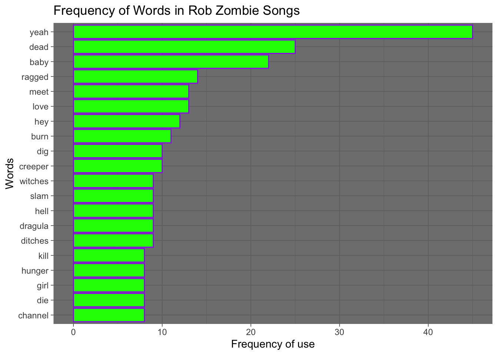
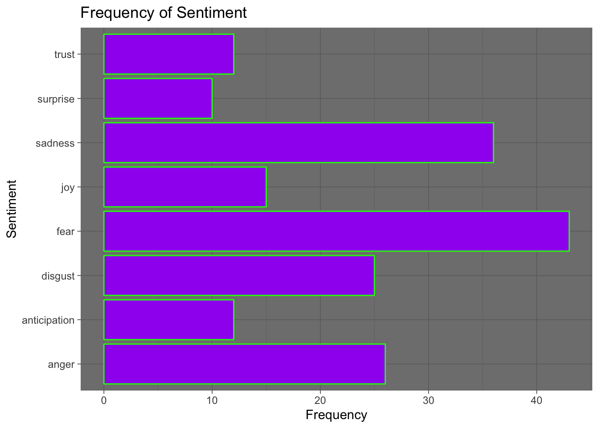

Using data mining text mining sentiment analysis to explore the emotional impact of Rob Zombie’s iconic album, Hellbilly Deluxe (1998). This album is known for its distinctive blend of horror, metal, and industrial sounds. We try to find insights into the album’s influence on listener emotions. The research underscores the power of sentiment analysis in deciphering the intricate interplay between musical elements and emotional responses, providing a comprehensive understanding of the emotional dynamics evoked by this unique musical work. It is known that music affects a human’s state of emotion, but it is important to consider the level of complexity that the emotional state could represent.
# A tibble: 6 × 3
song_name lyrics song_length_sec
<chr> <chr> <dbl>
1 Call of the zombie "And out of the darkness, the Zombie did … 30
2 Superbeast "Shriek the lips\nAcross ragged tongue,\n… 220
3 Dragula "Dead I am the one, Exterminating son\nSl… 222
4 Living Dead Girl "Rage in the cage\nAnd piss upon the stag… 201
5 Perversion 99 <NA> 103
6 Demonoid Phenomenon "Hell on Earth\nFor What It's Worth\nDead… 251
# A tibble: 10 × 3
song_name song_length_sec word
<chr> <dbl> <chr>
1 Call of the zombie 30 darkness
2 Call of the zombie 30 zombie
3 Call of the zombie 30 call
4 Call of the zombie 30 true
5 Call of the zombie 30 pain
6 Call of the zombie 30 suffering
7 Call of the zombie 30 brought
8 Call of the zombie 30 ran
9 Call of the zombie 30 children
10 Call of the zombie 30 hide
Sent <- CleanLyrics %>%inner_join(get_sentiments("bing")) %>%count(song_name, sentiment) %>%spread(sentiment, n, fill =0)%>%mutate(sentiment = positive - negative)
Joining with `by = join_by(word)`
Sent
# A tibble: 12 × 4
song_name negative positive sentiment
<chr> <dbl> <dbl> <dbl>
1 Call of the zombie 6 0 -6
2 Demonoid Phenomenon 18 2 -16
3 Dragula 27 3 -24
4 How to make a monster 16 0 -16
5 Living Dead Girl 34 3 -31
6 meet the creeper 11 3 -8
7 Return of the phantom stranger 16 6 -10
8 spookshow baby 13 3 -10
9 Superbeast 34 5 -29
10 Th beginning of the end 3 0 -3
11 The ballad of resurrection joe and rosa whore 25 16 -9
12 What lurks on channel x 12 0 -12
# A tibble: 6 × 2
word uses
<chr> <int>
1 yeah 45
2 dead 25
3 baby 22
4 ragged 14
5 love 13
6 meet 13
Freq %>%slice(1:20) %>%ggplot() +geom_bar(aes(x =reorder(word, uses), y = uses), stat ="identity", color ='purple', fill ='green') +coord_flip() +labs(y ="Frequency of use",x ="Words") +theme_minimal() +theme_dark() +ggtitle('Frequency of Words in Rob Zombie Songs')

LyricCloud<- CleanLyrics%>%anti_join(stop_words) %>%count(word) %>%with(wordcloud(word, n, color =c("maroon"), max.words=100))
# A tibble: 6 × 3
song_name song_length_sec word
<chr> <dbl> <chr>
1 Call of the zombie 30 darkness
2 Call of the zombie 30 zombie
3 Call of the zombie 30 call
4 Call of the zombie 30 true
5 Call of the zombie 30 pain
6 Call of the zombie 30 suffering
CleanWords %>%ggplot() +geom_bar(aes(x = sentiment), color ='green', fill ='purple') +coord_flip() +labs(y ="Frequency",x ="Sentiment") +theme_minimal() +theme_dark() +ggtitle('Frequency of Sentiment')

clean <-merge(CleanLyrics, CleanWords, by ="word")